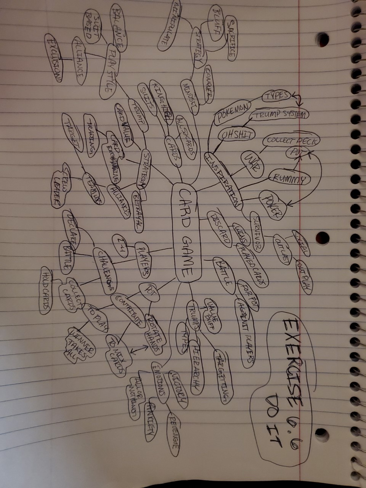

 I would say that I didn’t expect to learn much from this exercise. In the exercise I made a brainstorm for the Card Game idea that I had. In my head the game had seemed pretty well thought out. However, this exercise showed me some things that I didn’t consider. And play testing the game revealed some problems as well. I never considered the player during the game. Moreover, how do I want the player to feel? What feelings do I want the player to have? What decisions do I want the player to face? What strategies to employ? Does the player see a path forward? All of these were things that I needed to consider because they may make or break the game. I discovered that the game had some mechanic bugs in it. The way things would play out wouldn’t make sense to what I wanted the resulting scenarios to be. I knew that my game mimicked other card games however I sought inspiration from games that weren’t card games. Such as game shows and video games. I big social aspect of my game was taken from the TV show Survivor. And my trump system was like the types in Pokémon. This shocked me, not that I found inspiration in facets outside of card games; rather that made a complex social and strategic card game idea just using regular playing cards.
This game that we played is like an alpha phase of the card game. The purpose of the game was to playtest. Many of the mechanics and features worked quite successfully however, some need improvement and some need to be scrapped. With the playtesting that I did with my family I learned that my game does have some bugs in it. Many aspects and fundamental mechanics in my game I discovered needed to be thrown out. For example, my trump system, and war system weren’t working together. Instead I think I’ll change the war like system to a turn-based mechanic system. I also, wanted to expand upon my alliance and social aspect, and add a pot/discard pile, much like rummy and poker. I found that making players discard a card in order to battle will add a bluffing feature making the social aspect more interesting. Speaking of a social aspect I found that the card trading feature worked rather well. Some players would be honest about trading and some would bluff and make the trade not fair. Which was quite funny.
Many times players would gang up on the leader and strategize against the leader. I saw that trump/ suit buff worked in balancing the card values as planned. The suit buff balances the game out that way some lower value cards can trump higher ones when depending on the suits. This as planned added an extra factor to think about when choosing which card to play. However, I’m uncertain on the strength of the buff. Need to discuss with my group however I’m hopeful that the game will work. I think of changing the cards that the players start out with to a random dealt set instead of selecting the suits. Players at the beginning would just target the opposing suit that would be easily trumped. And cards would get split evenly. I want the cards eventually in the game to be split so diversely that the card suits played against players will be random almost. Making the player feel anxious.